Hotel Reservation System
Marriott jaisa hotel booking system — room-type inventory, 10% overbooking, double-booking se bachav (idempotency key, pessimistic/optimistic locking, DB constraints), sharding, cache aur microservices mein consistency (2PC vs Saga). Airbnb, flight aur movie-ticket booking pe bhi same patterns lagte hain.
Introduction
Hotel reservation ek "inventory + money" problem hai: limited cheez (rooms × dates) ko concurrent users ke beech bechna, bina double-sell kiye (overbooking policy ke andar), aur payment ke saath consistent rakhna. Payments engineer ke liye yeh familiar zameen hai — idempotency, locking, sagas.
Step 1: Requirements aur scope
- Scale: 5,000 hotels, 1M rooms (ek hotel chain).
- Payment: reservation ke time full payment.
- Channel: sirf website/app (phone booking nahi).
- Cancellation: haan.
- Overbooking 10% allowed — hotels cancellations anticipate karke zyada bechte hain.
- Room price daily badalta hai.
- Focus: hotel page, room detail page, reserve room, admin panel, overbooking.
Non-functional
- High concurrency — peak season mein ek hi hotel pe bahut log.
- Moderate latency — reservation pe few seconds acceptable.
Back-of-the-envelope
- 70% occupancy, avg stay 3 din → 1M × 0.7 / 3 ≈ ~240k reservations/day
- 240k / 10^5 sec ≈ ~3 TPS — reservation TPS bahut low hai!
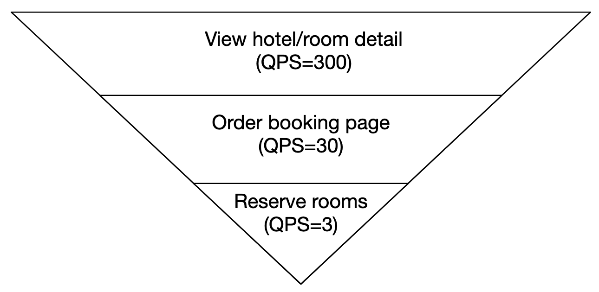
Step 2: API, data model, high-level design
APIs
| Group | Endpoints |
|---|---|
| Hotel | GET /v1/hotels/{id}; POST /v1/hotels, PUT/DELETE /v1/hotels/{id} (ops only) |
| Room | GET /v1/hotels/{id}/rooms/{id}; POST /v1/hotels/{id}/rooms, PUT/DELETE .../rooms/{id} (ops only) |
| Reservation | GET /v1/reservations (my history), GET /v1/reservations/{id}, POST /v1/reservations, DELETE /v1/reservations/{id} (cancel) |
POST /v1/reservations
{
"startDate":"2021-04-28",
"endDate":"2021-04-30",
"hotelID":"245",
"roomID":"U12354673389",
"reservationID":"13422445" // idempotency key!
}reservationID = idempotency key — double booking rokne ke liye (concurrency section mein detail).
Data model — kyun relational?
- Read-heavy, write-light → RDBMS ka sweet spot (NoSQL write-optimised, yahan zaroorat nahi).
- ACID chahiye — negative inventory, double charge jaise problems rokne ke liye.
- Data structure clear aur relational hai.
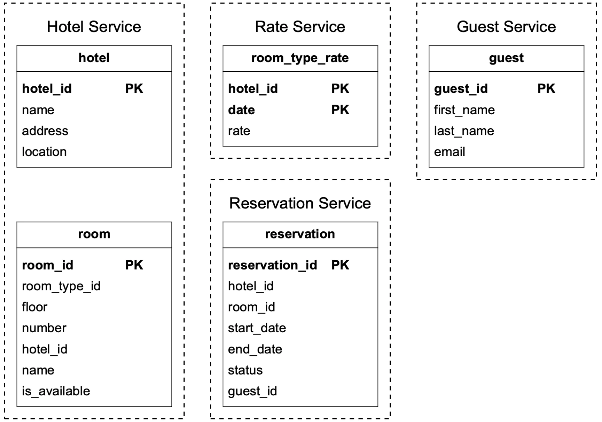
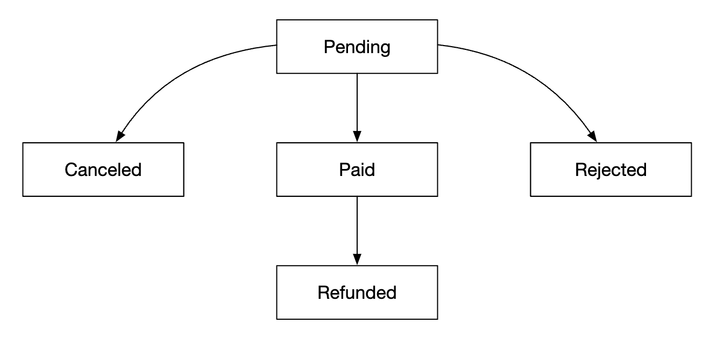
Problem: yeh model Airbnb (specific listing) ke liye theek hai, lekin hotel mein user room type book karta hai (Deluxe King), specific room number check-in pe assign hota hai. Fix neeche "Improved data model" mein.
High-level architecture
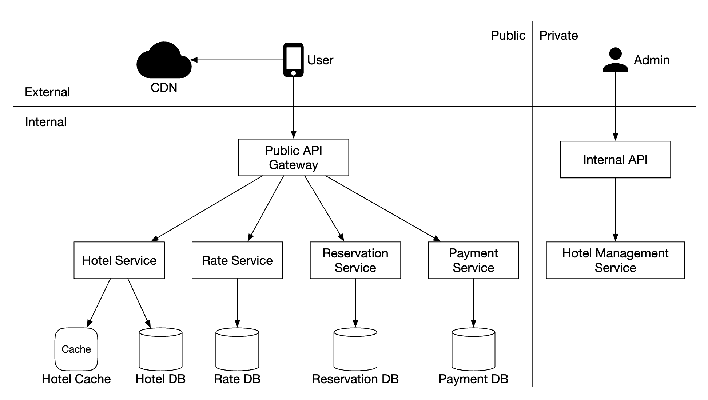
- CDN: JS bundles, images, videos.
- Public API Gateway: rate limiting, auth (managed).
- Internal APIs: sirf authorised staff, VPN ke peeche.
- Hotel service: static-ish data → aggressively cache.
- Rate service: future dates ke prices; price hotel kitna bhara hai us pe depend karta hai.
- Reservation service: booking + inventory tracking.
- Payment service: payment + success pe reservation status update.
- Hotel management service: admin functions.
- Inter-service: gRPC jaisa RPC.
Step 3a: Improved data model
POST /v1/reservations
{
"startDate":"2021-04-28",
"endDate":"2021-04-30",
"hotelID":"245",
"roomTypeID":"12354673389",
"roomCount":"3",
"reservationID":"13422445"
}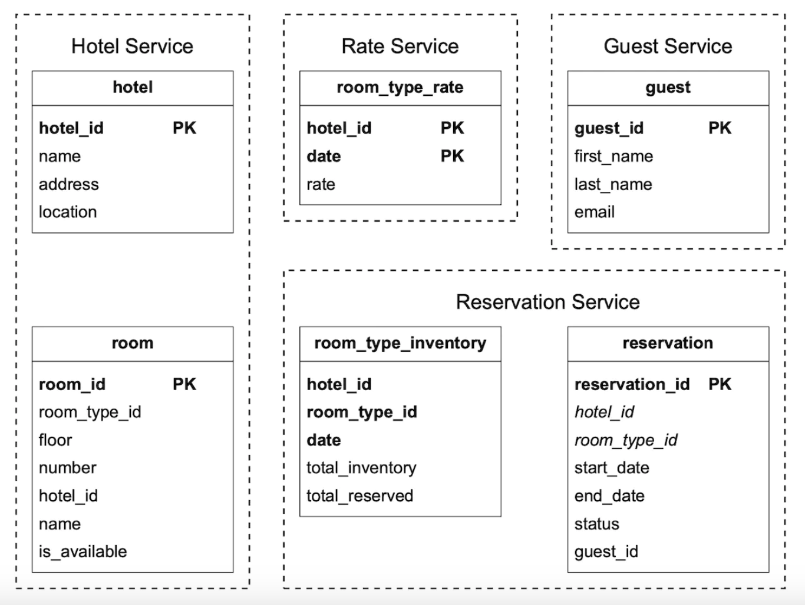
room_type_inventory — ek row per (hotel, room type, date):
| hotel_id | room_type_id | date | total_inventory | total_reserved |
|---|---|---|---|---|
| 211 | 1001 | 2021-06-01 | 100 | 80 |
| 211 | 1001 | 2021-06-02 | 100 | 82 |
| 211 | 1001 | 2021-06-03 | 100 | 86 |
| 211 | 1001 | … | … | |
| 211 | 1001 | 2023-05-31 | 100 | 0 |
| 211 | 1002 | 2021-06-01 | 200 | 16 |
| 2210 | 101 | 2021-06-01 | 30 | 23 |
| 2210 | 101 | 2021-06-02 | 30 | 25 |
total_inventory = total rooms minus maintenance ke liye hataye gaye. Rows daily CRON se pre-populate (2 saal aage tak).
SELECT date, total_inventory, total_reserved
FROM room_type_inventory
WHERE room_type_id = ${roomTypeId} AND hotel_id = ${hotelId}
AND date BETWEEN ${startDate} AND ${endDate};
-- har din ke liye (overbooking 10%):
if (total_reserved + ${numberOfRoomsToReserve}) <= 110% * total_inventoryStorage: 5000 hotels × 20 room types × 2 years × 365 = 73M rows — ek DB server ke liye kaafi chhota. HA ke liye cross-zone read replicas.
hash(hotel_id) % N se shard — kyunki har query mein hotel_id hai.Step 3b: Concurrency — double booking
Do alag problems: (1) same user ne "Book" do baar click kiya, (2) do alag users same last room ek saath book kar rahe hain.
Problem 1: same user, double click
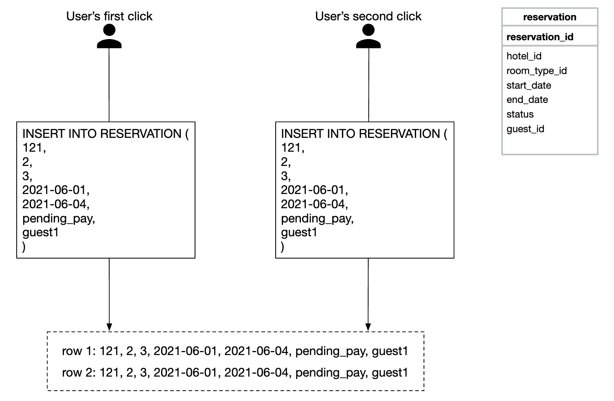
- Client-side: button disable — lekin JS off ho ya network retry ho to bekaar. Sirf UX help hai, guarantee nahi.
- Idempotent API: idempotency key se.
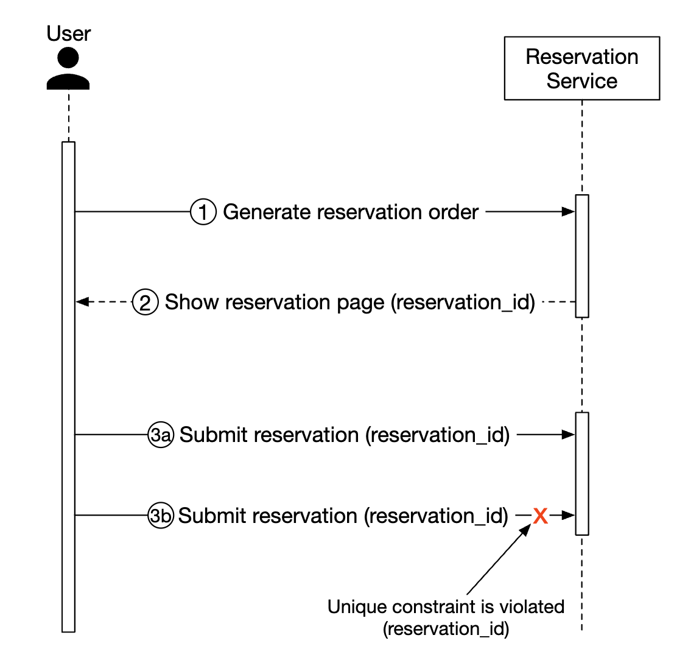
reservation_id deta hai. (3a) Submit with reservation_id → success. (3b) Dobara submit same reservation_id → red X "Unique constraint is violated (reservation_id)". Key server ne pehle issue ki, isliye retry same key bhejta hai.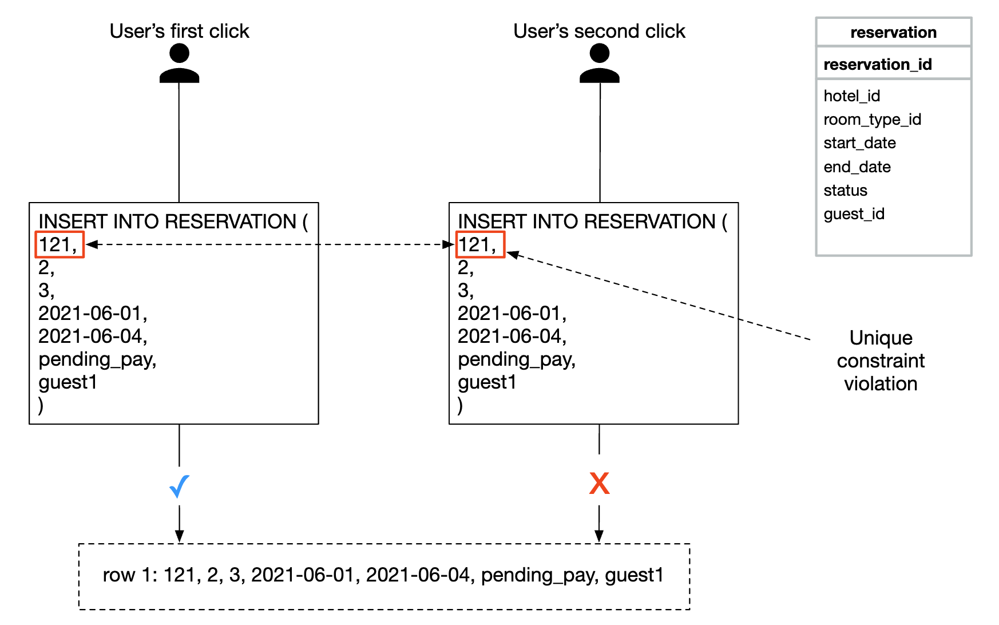
Idempotency-Key header leta hai aur pehli request ka response store karta hai — retry pe same response replay hota hai (sirf error nahi). Production pattern: idempotency_keys(key PK, request_hash, status, response_body, created_at). (a) Same key + different body → 422 (client bug). (b) Pehli request abhi in-flight → 409/retry-later. (c) Complete → stored response return. Sirf unique-constraint error user ko "booking failed" dikha dega jabki booking ho chuki hai — isliye "detect duplicate, return original result" karo.Problem 2: multiple users, last room
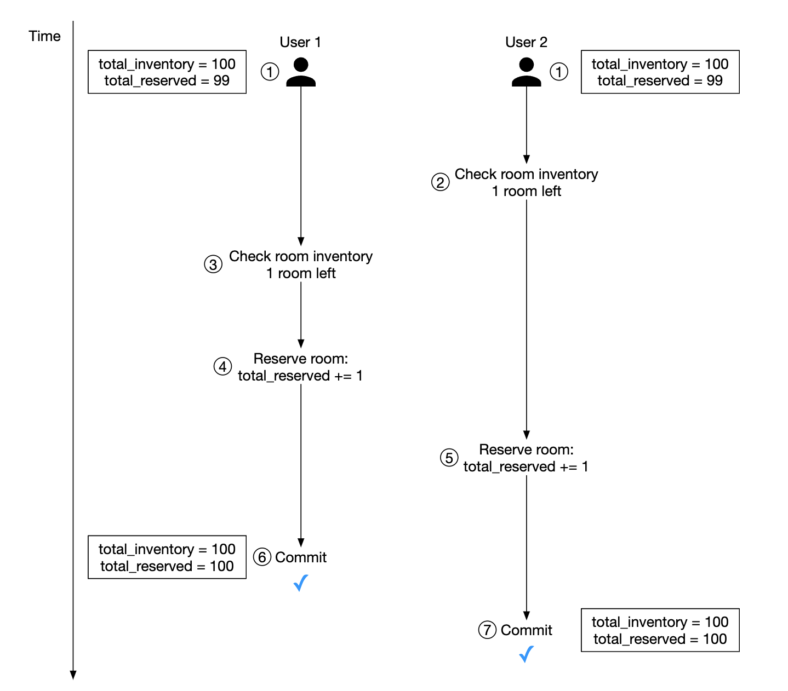
Reserve karne ka SQL:
-- step 1: check inventory
SELECT date, total_inventory, total_reserved
FROM room_type_inventory
WHERE room_type_id = ${roomTypeId} AND hotel_id = ${hotelId}
AND date BETWEEN ${startDate} AND ${endDate};
-- har row ke liye:
if ((total_reserved + ${numberOfRoomsToReserve}) > 110% * total_inventory) { Rollback }
-- step 2: reserve
UPDATE room_type_inventory
SET total_reserved = total_reserved + ${numberOfRoomsToReserve}
WHERE room_type_id = ${roomTypeId}
AND date BETWEEN ${startDate} AND ${endDate}; -- (production mein hotel_id bhi WHERE mein daalo)
CommitTeen solutions:
Option 1: Pessimistic locking
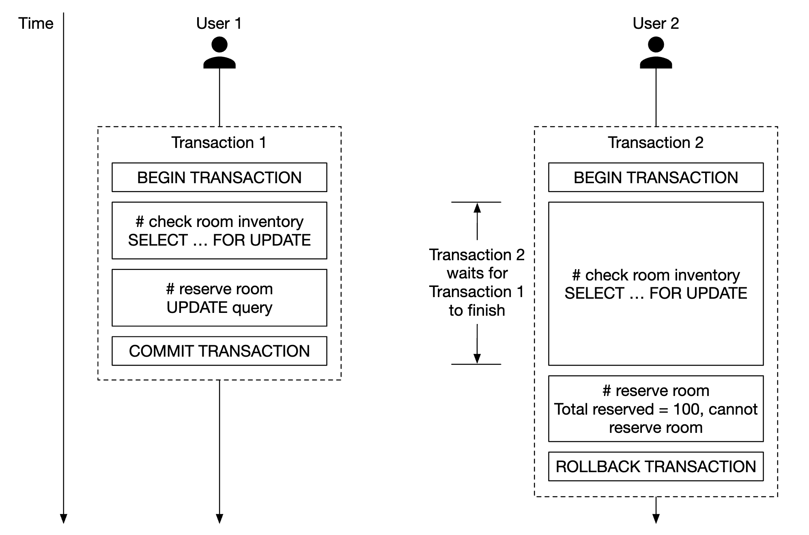
SELECT … FOR UPDATE (rows lock) → UPDATE → COMMIT. Transaction 2 bhi SELECT … FOR UPDATE karta hai lekin beech ke arrow pe "Transaction 2 waits for Transaction 1 to finish". T1 commit ke baad T2 dekhta hai total reserved = 100, room nahi → ROLLBACK. Updates serialize ho gaye.- ✅ Simple, heavy contention mein safe.
- ❌ Deadlocks (multiple rows/dates lock — lock order consistent rakho, e.g. date ASC), long transactions sabko block karte hain, scalable nahi. Author recommend nahi karte.
Option 2: Optimistic locking
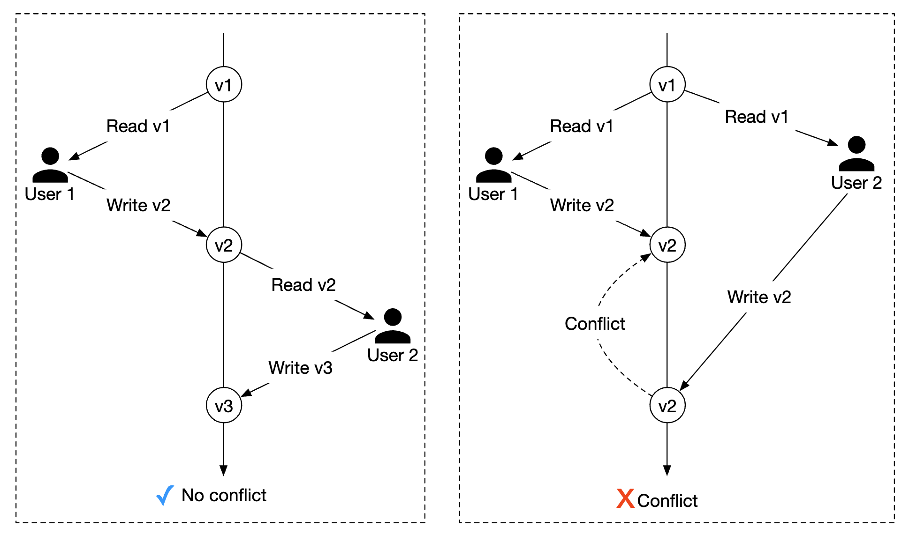
versioncolumn; read version, update peWHERE version = :readaur version+1. Timestamps ki jagah version numbers — clocks unreliable.- ✅ No DB locks, low contention mein fast. ❌ High contention pe retries/rollbacks ka storm.
- Hotel system ke liye achha fit — QPS high nahi.
Option 3: Database constraint
CONSTRAINT `check_room_count` CHECK((`total_inventory - total_reserved` >= 0))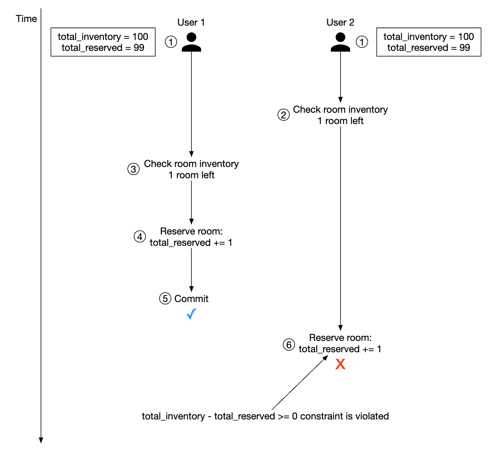
- ✅ Easy, low contention mein badhiya. ❌ High contention mein optimistic jaisa hi; constraints app code jaise version-control karna mushkil; har DB support nahi karta (MySQL 8.0.16 se CHECK enforce hota hai).
total_inventory - total_reserved >= 0 10% overbooking ko allow hi nahi karta! Overbooking chahiye to constraint total_reserved <= total_inventory * 1.1 type ho. Aur sabse clean trick — conditional atomic UPDATE:
UPDATE room_type_inventory
SET total_reserved = total_reserved + :n
WHERE hotel_id = :h AND room_type_id = :t
AND date >= :start AND date < :end
AND total_reserved + :n <= FLOOR(total_inventory * 1.1);
-- affected rows == number of nights ? commit : rollbackUPDATE account SET balance = balance - :amt WHERE id = :id AND balance >= :amt.@Version field; conflict pe ObjectOptimisticLockingFailureException → Spring Retry @Retryable se 2-3 baar retry. Pessimistic = @Lock(LockModeType.PESSIMISTIC_WRITE) repository method pe (SELECT … FOR UPDATE generate karta hai) + lock timeout hint. Conditional UPDATE = @Modifying @Query jo affected-row count return kare.Step 3c: Scalability
Agar system booking.com jaisa ho jaaye — QPS 1000× ho sakta hai. Services stateless → replicas add. Bottleneck = DB.
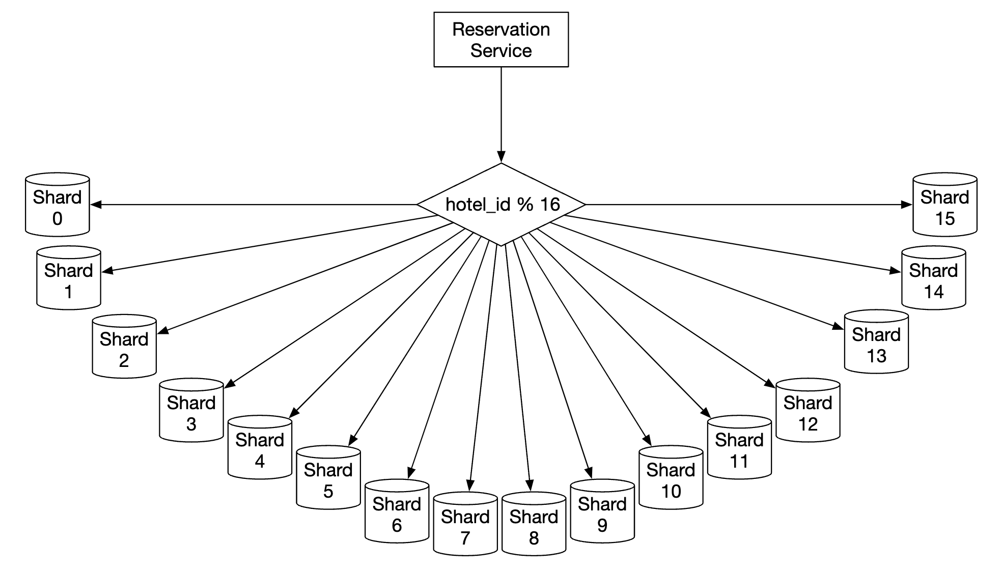
Example: 30,000 QPS / 16 shards = 1,875 QPS per shard — ek MySQL cluster comfortably handle karta hai.
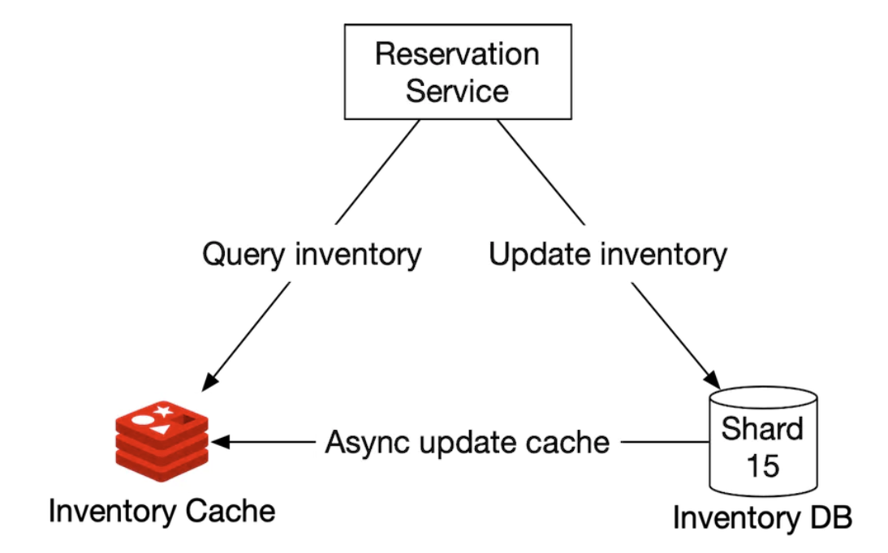
key: hotelID_roomTypeID_{date}
value: available rooms for that hotel, room type, date (TTL: past dates expire)- Sync: CDC (Debezium) DB changes padhke Redis update karta hai.
- Cache aur DB thodi der inconsistent ho sakte hain — theek hai, kyunki final check DB pe hota hai. Worst case: user ko "available" dikha, book pe "sold out" mila — jo hesitation se waise bhi hota hai.
- ✅ DB load kam, fast. ❌ Consistency + UX impact sochna padta hai.
Step 3d: Microservices mein data consistency
Pragmatic choice: reservation aur inventory APIs same service + same DB mein — taaki ACID transaction mil sake. Interviewer challenge karega: "Yeh pure microservices nahi hai."
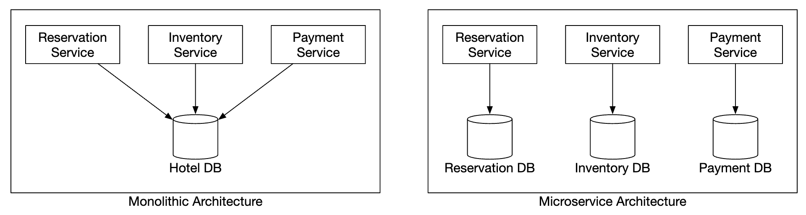
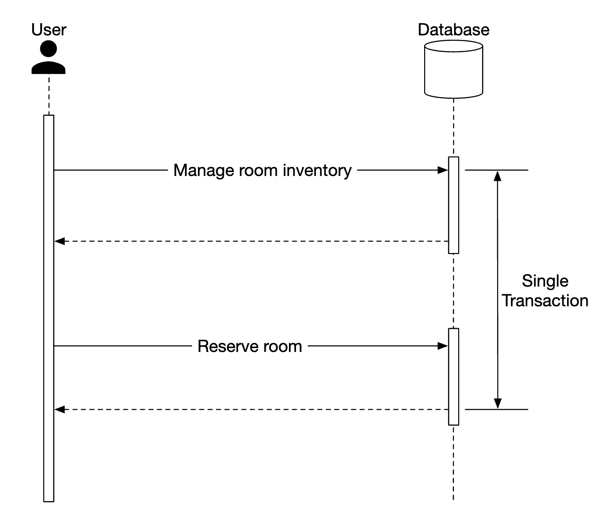
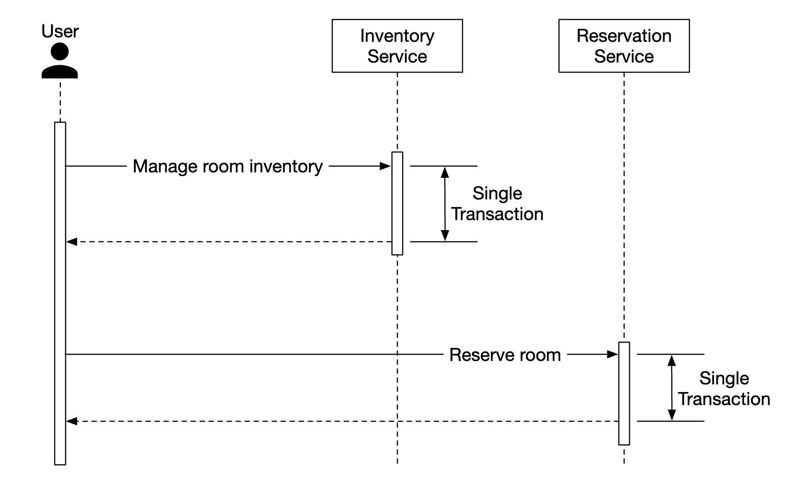
| 2PC (Two-phase commit) | Saga | |
|---|---|---|
| Consistency | Atomic (strong) | Eventual |
| How | Coordinator prepare → commit across nodes | Local transactions ki chain + failure pe compensating transactions |
| Problem | Ek slow/down node sabko block; coordinator SPOF | Intermediate states visible; compensation logic complex |
Notes ka point: cross-service consistency complexity bahut badhata hai — pehle socho ki cost worth hai ya dependent operations ko ek DB mein rakhna better hai.
Step 4: Wrap up
- Requirements + estimation (3 TPS, lekin contention high)
- API, data model, architecture
- Schema evolve kiya: room → room_type_inventory per date
- Race conditions: idempotency key, pessimistic/optimistic locking, DB constraints
- Scaling: sharding by hotel_id, Redis cache via CDC
- Microservice consistency: 2PC vs Saga vs pragmatic shared DB
- Estimation se point banao: "TPS 3 hai, to problem scale nahi, correctness under contention hai."
- Room vs room-type booking ka farak khud bolo →
room_type_inventoryper date. - Do race conditions alag-alag naam se: double-click (idempotency) vs last-room race (locking).
- Teen locking options ka table + choice: "low contention → optimistic/conditional update; flash-sale hotel → pessimistic ya queue."
- Scale: shard by hotel_id + cache for reads + DB as source of truth.
- Microservices: Saga with holds; mention ki reservation+inventory ek DB mein rakhna pragmatic hai.
Follow-up questions
- Q: User room hold karke payment page pe baitha hai — inventory kab tak block?
- Hold with expiry (e.g. 10-15 min) —
status=HELD, expires_at; scheduler/delayed message expire pe release kare (Ch19 delayed messages). - Q: Ek hotel mein flash sale (bahut high contention)?
- Optimistic retries storm karenge. Options: per-hotel queue (serialize requests), Redis atomic DECR as gate + DB confirm, ya pessimistic lock with short txn.
- Q: Multi-night booking mein ek night available nahi?
- Poora transaction rollback — saari nights ek transaction mein; conditional update ka affected-rows == nights check.
- Q: Payment success hua lekin reservation confirm call fail?
- Payment service event emit kare (outbox), reservation service idempotently confirm kare; agar hold expire ho chuka to auto-refund compensation + alert.
Key Takeaways
- Low TPS ≠ easy: asli problem concurrency aur correctness hai.
- Hotel = room type per date inventory table; 73M rows, ek DB kaafi.
- Double-click → idempotency key (server-issued) + unique constraint + stored response.
- Last-room race → pessimistic (FOR UPDATE), optimistic (version), DB constraint, ya best: conditional atomic UPDATE.
- Shard by hotel_id; cache reads via CDC, decisions DB pe.
- Cross-service: 2PC (blocking) vs Saga (eventual + compensation); kabhi kabhi shared DB pragmatic hai.